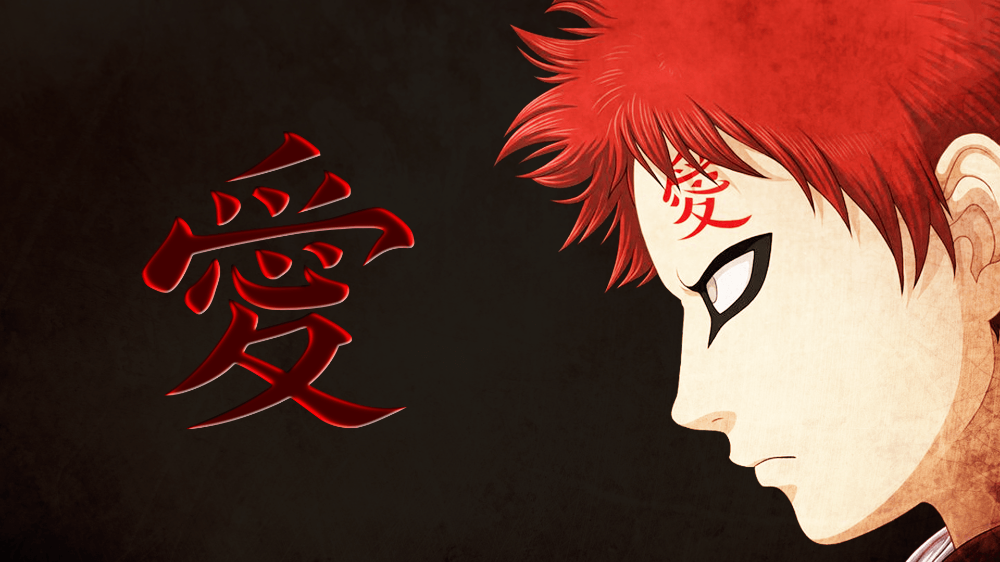
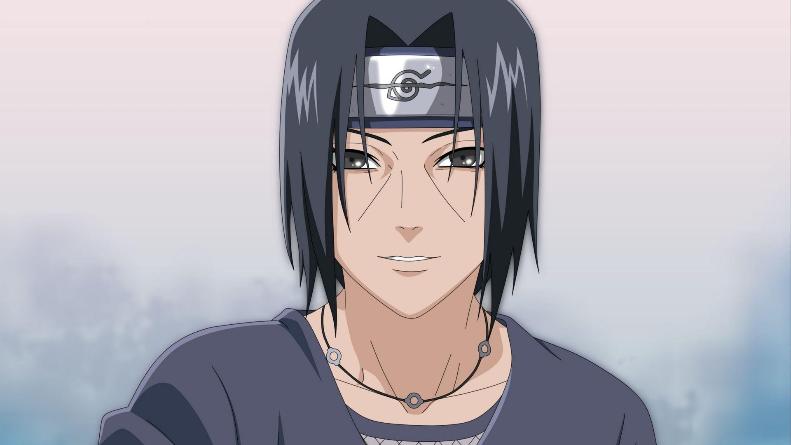
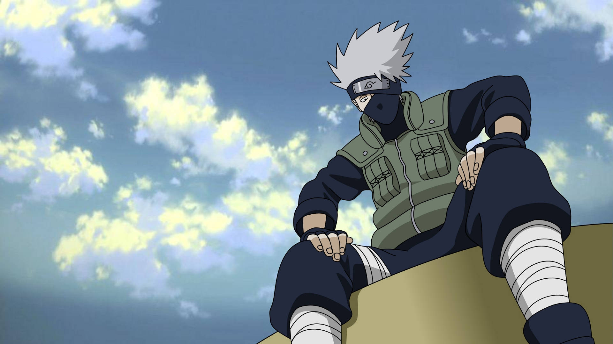
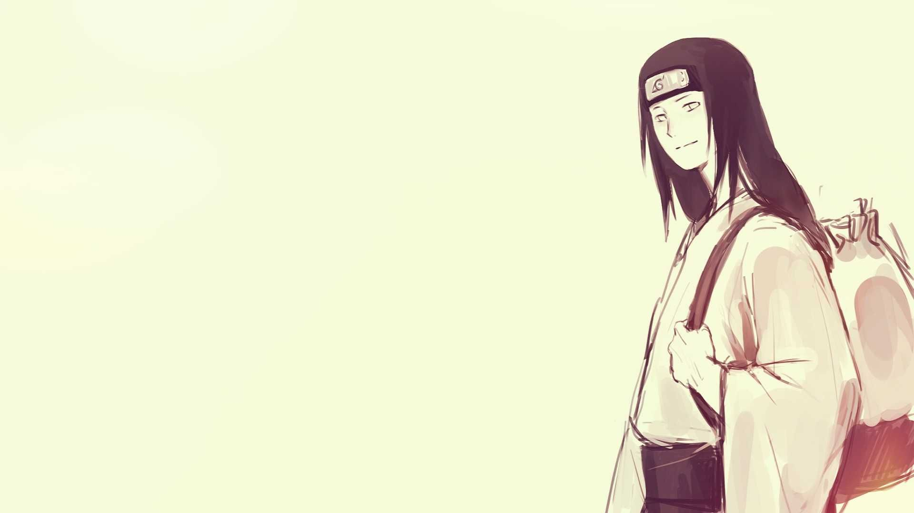
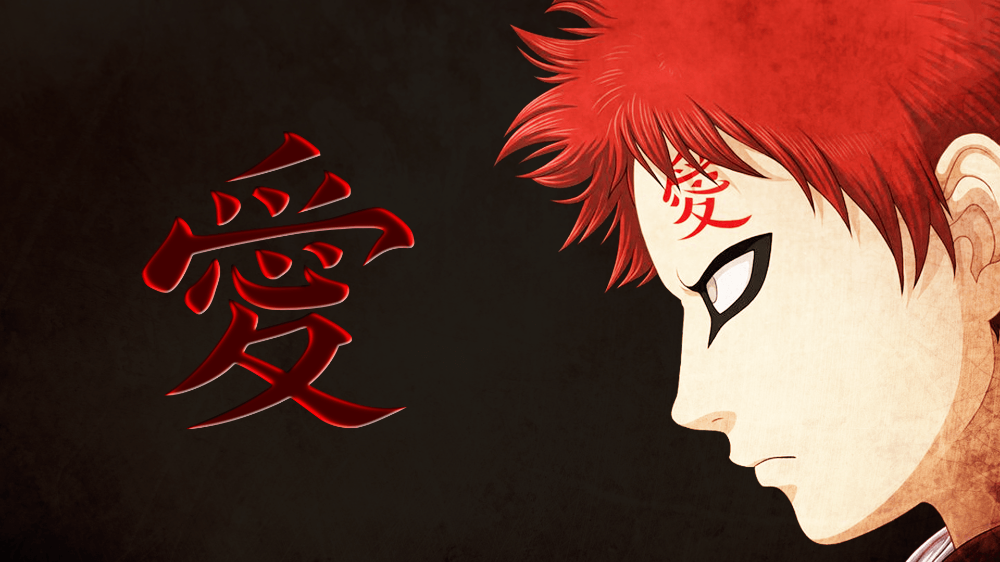
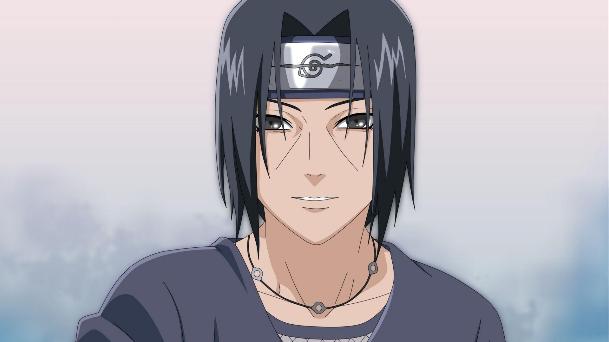
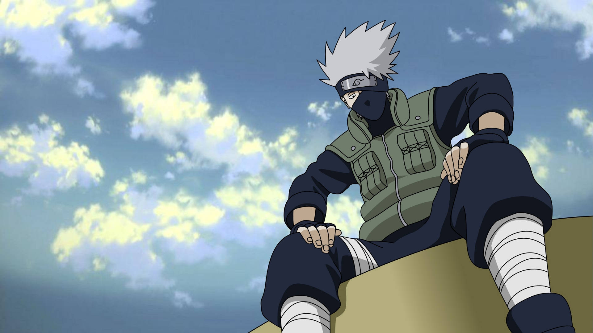
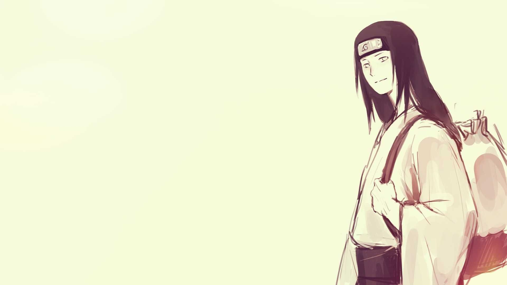

Naruto
Naruto Uzumaki (うずまきナルト, Uzumaki Naruto) é um shinobi de Konohagakure, a reencarnação atual de Asura e o protagonista homônimo da franquia Naruto. Ele se tornou o jinchūriki de Kurama no dia de seu nascimento, um destino que o levou a ser condenado ao ostracismo e ser negligenciado por toda a aldeia durante toda a sua infância. Depois de entrar para o Time Kakashi, Naruto trabalhou duro para ganhar o respeito e o reconhecimento da aldeia, com o sonho de se tornar Hokage. Nos anos seguintes, Naruto torna-se um ninja capaz, que é eventualmente considerado como um herói, tanto por parte dos moradores como o mundo shinobi em geral. O objetivo de Naruto em se tornar Hokage foi deixado de lado, devido a ele querer salvar o seu melhor amigo e companheiro de equipe,Sasuke Uchiha, que sucumbiu ao ódio e à escuridão, eventualmente, Naruto consegue cumprir esse objetivo após derrotá-lo em sua batalha final. Anos depois da Quarta Guerra Mundial Shinobi, Naruto realiza seu sonho e se torna o Sétimo Hokage (七代目火影,Nanadaime Hokage; Literalmente significa "Sétima Sombra do Fogo"), enquanto também se casa com Hinata Hyūga e tem dois filhos com ela, Boruto e Himawari Uzumaki.
Gaara
Gaara (我爱罗, Gaara) é um shinobi de Sunagakure. OShukaku foi selado em seu corpo no dia de seu nascimento, um procedimento que resultou na morte de sua mãe. Considerado como um monstro pela vila e sem ninguém para amá-lo, Gaara passou a desprezar o mundo e começou contando apenas com sua própria força, ganhando o título de Gaara do Deserto(砂瀑の我愛羅, Sabaku no Gaara). Este poder de auto-amor é mais tarde derrotado pelo dedicação inabalável de Naruto Uzumaki para com seus amigos. Desse ponto em diante, Gaara começa a imitar o método de Naruto e muda as opiniões de Sunagakure com relação a ele. Ele eventualmente se torna oQuinto Kazekage (五代目風影, Godaime Kazekage; Literalmente significa "Quinta Sombra do Vento"), uma posição que ele mantém, mesmo depois de o Shukaku ser removido de seu corpo pela Akatsuki.
Itachi
Itachi Uchiha (うちはイタチ, Uchiha Itachi) foi um prodígio do clã Uchiha de Konohagakure. Ele se tornou um criminoso internacional depois de assassinar seu clã inteiro, poupando apenas seu irmão mais novo, Sasuke. Ele se juntou a Akatsuki, onde ele entrou em frenquentes conflitos com Konoha e seus ninjas, incluindo Sasuke, que procurou vingar sua família. Depois de morrer durante uma batalha com Sasuke, as motivações de Itachi foram reveladas serem mais complicadas do que pareciam ele só queria proteger seu irmão e a vila, permanecendo um shinobi leal a Konohagakure até o fim.
Kakashi
Kakashi Hatake (はたけカカシ, Hatake Kakashi) é umShinobi de Konohagakure. Ele recebeu um Sharingan de seu ex-companheiro de equipe, Obito Uchiha, quando era mais jovem, fazendo-o ser conhecido como Kakashi o Ninja Copiador (コピー忍者のカカシ, Kopī Ninja no Kakashi) e Kakashi do Sharingan (写輪眼のカカシ,Sharingan no Kakashi). Seu prodigioso talento, habilidades e destreza com o Sharingan fizeram dele um dos mais capazes ninjas da aldeia, sendo reconhecido em todo o mundo ninja.
Neji
Neji Hyūga (日向ネジ, Hyūga Neji) foi um membro do clã Hyūga e um shinobi de Konohagakure. Embora tenha sido um prodígio mesmo pelos padrões dos Hyūga, Neji era um membro da casa secundária, por isso, não importa quão habilidoso tornou-se, ele estaria sempre em serviço para casa principal Hyūga, um fato que convenceu-o de que o destino era predeterminado. Depois de ver Naruto Uzumaki recusar a sua ideologia, Neji percebeu seu destino foi o que ele escolheu para si mesmo, e como um membro do Time Guy, ele buscou a força necessária para fazer o futuro que ele queria para sua família e amigos.